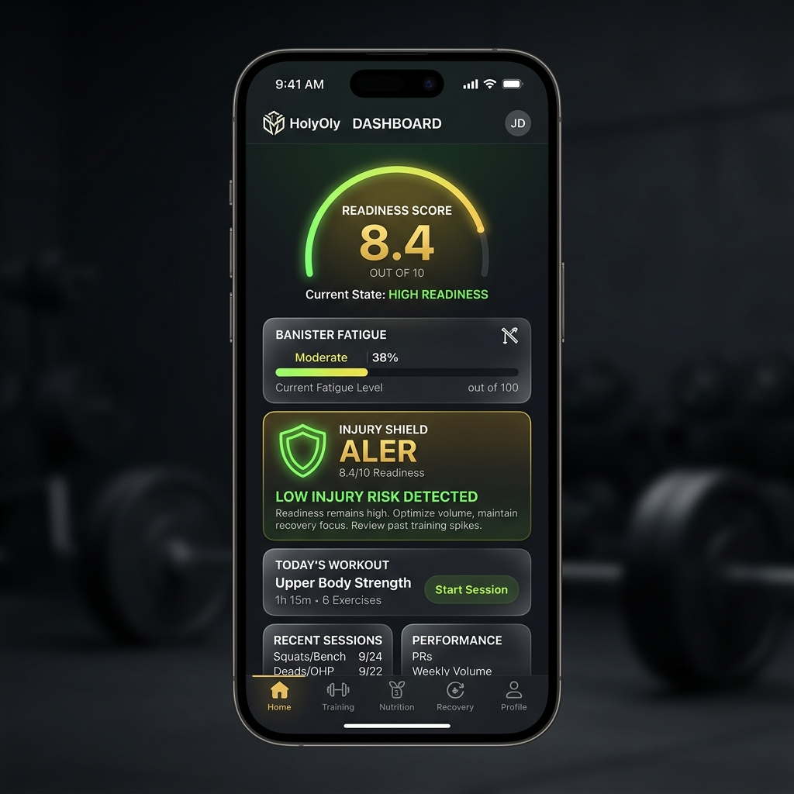
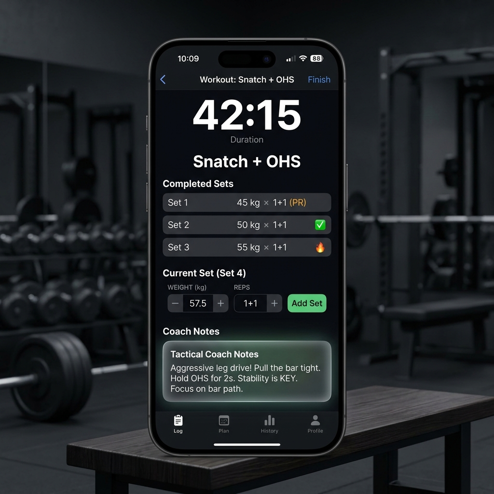
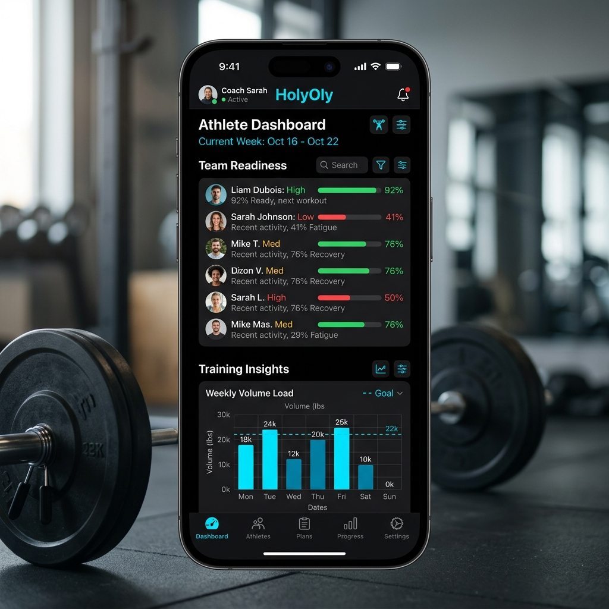

Hemos traducido 27 conceptos de wireframes a 18 páginas React optimizadas. Aquí puedes ver el diseño real que hemos implementado en el código.

Dashboard Atleta
AtletaHome.tsx

Sesión Activa
ActiveSession.tsx
🏆
GAMIFICACIÓN
El flujo se completa con la Victory Screen (Recompensas XP) y el Warmup Generator, todos implementados con este mismo lenguaje visual premium.

Command Center
CommandCenter.tsx
La interfaz del Coach cambia a un esquema Holy Cyan para diferenciar la analítica de la acción. Permite ver la fatiga crítica de todo el equipo en un segundo.